The crust from the last page now does things. The slime can be drawn back to ground it held, or pushed off it to new ground. And crust is fuel: a fire lit where the slime used to be runs across that ground and stops at the living body, leaving burnt ground where nothing is born. Everything here is planet 3, run seed 1, the squad idle, one seed: a look, not a census.
The same game at 5:00 with the slime's pull to its crust at three settings. Under 0 it moves on to ground it has not held; over 0 it keeps to what it held. The second row is the crust map: white where the ground was held, black where never, orange where walkers stand now.
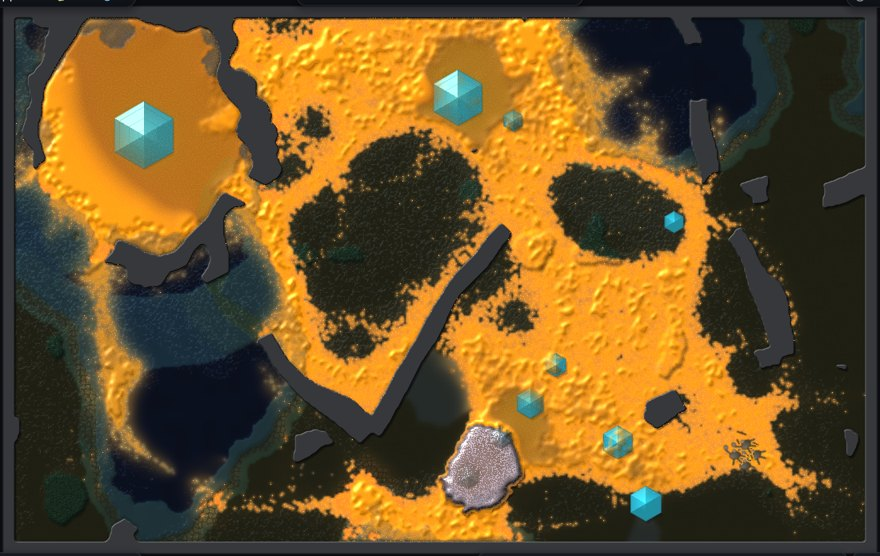
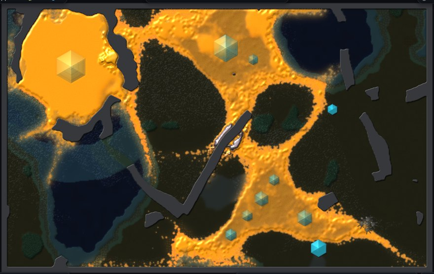
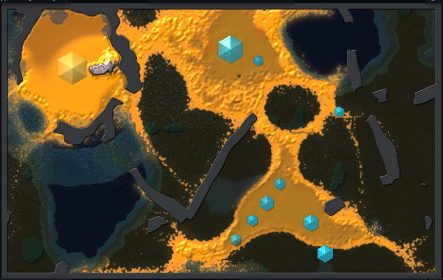
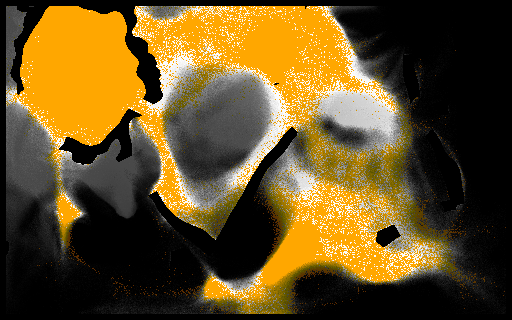
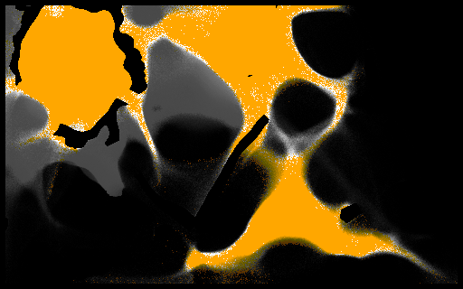
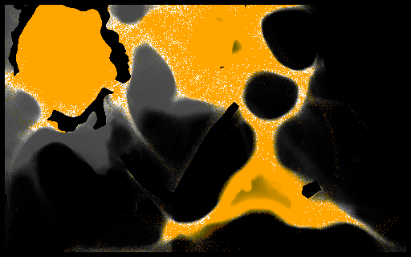
| Pull | Walkers 3:00 | Walkers 5:00 | Ground ever held, 5:00 | Walkers on old ground, 5:00 |
|---|---|---|---|---|
| −8 (fast ground on) | 35,674 | 50,869 | 98,284 | 44,978 |
| −2 | 30,355 | 43,920 | 80,749 | 37,045 |
| 0 | 30,166 | 39,999 | 72,507 | 37,798 |
| +2 | 31,807 | 45,595 | 71,720 | 39,047 |
| +8 (fast ground on) | 33,820 | 43,366 | 73,244 | 39,243 |
Moving on shows plainly: at −8 the slime has covered 36% more of the map by 5:00. Keeping to its ground barely shows with an idle squad, because nothing pushes the slime off; the film where you blast it off its ground and watch it come back is still to make. Both signs ended bigger than 0 on this seed, which one seed can't tell apart from chance.
At 2:30 a small fire (4 cells) is lit in the clearing the slime held in its first minute and then left. Left: crust is not fuel, as today. Right: crust burns as 3 plants a unit, and burnt ground over 0.3 char is barren.
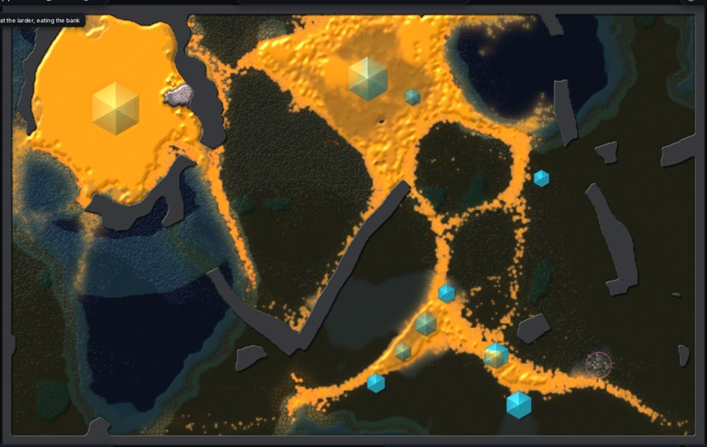
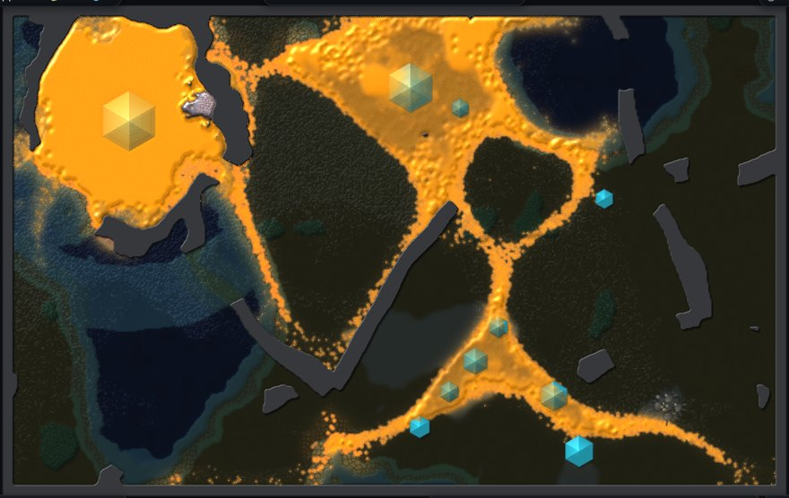
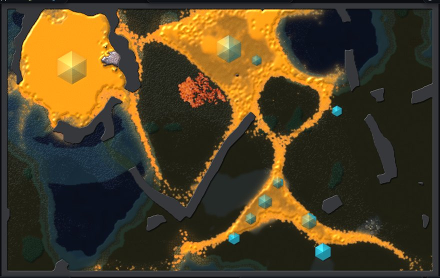
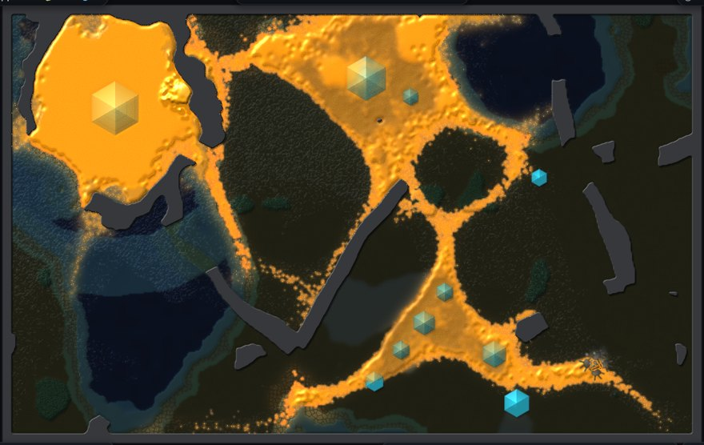
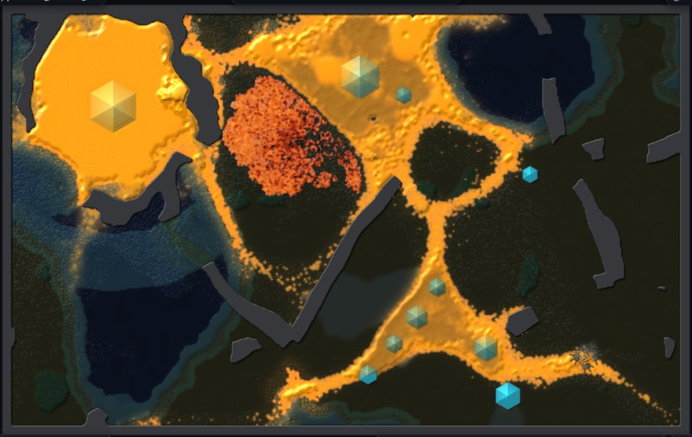
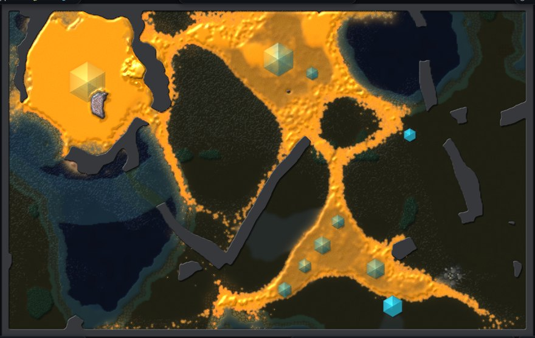
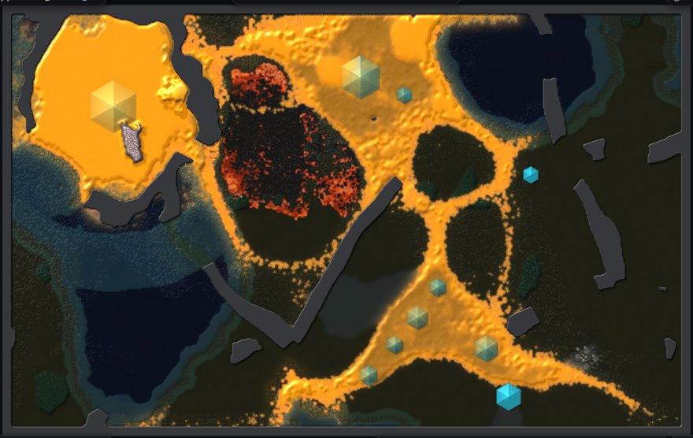
| Crust worth (plants) | 2:32 | 2:40 | 2:50 | 3:00 | 3:30 | 4:00 |
|---|---|---|---|---|---|---|
| 0 | 32 | 12 | 2 | 0 | 0 | 0 |
| 1 | 51 | 41 | 30 | 4 | 0 | 0 |
| 3 (in crust=1) | 84 | 180 | 331 | 889 | 4,382 | 2,743 |
| 6 | 139 | 371 | 1,111 | 2,853 | 6,682 | 4,740 |
Cells burning. The front crosses the whole clearing the slime left and stops at the living slime's edge, as you ruled: fed slime doesn't burn. The slime itself loses almost nothing (35,004 against 34,785 walkers at 4:00); the fire takes the ground it left. Burnt ground over 0.3 char takes no new slime while it lasts.